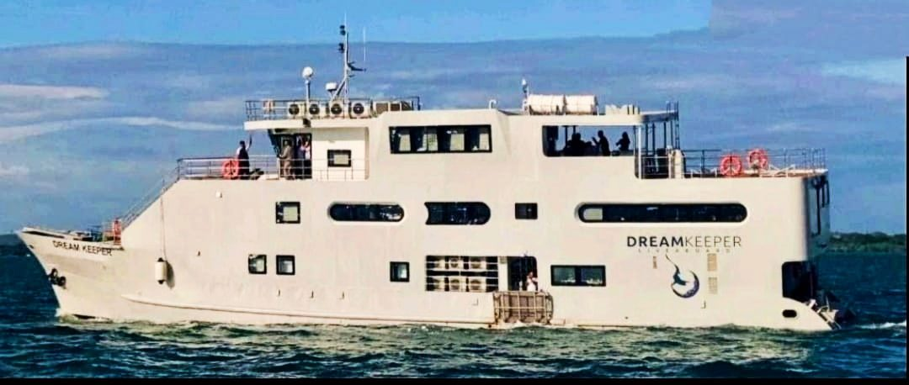
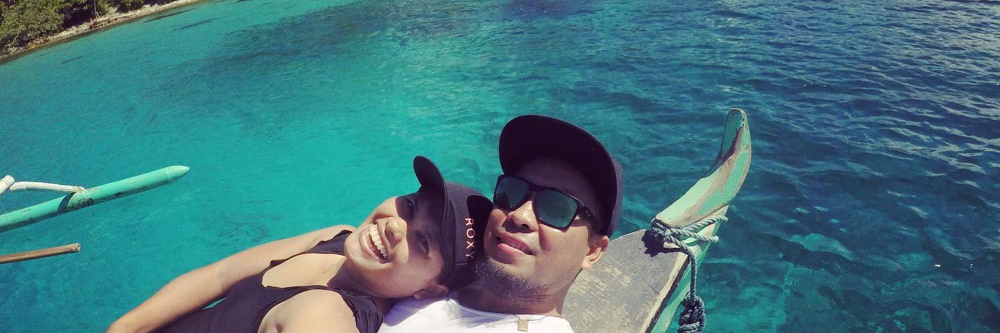

Sa hapon sa 27 Abril 2023, mibiya ang liveaboard dive yacht nga M/V Dream Keeper gikan sa San Remigio sa amihanang Cebu ug miatubang sa bukas nga Dagat Sulu. Sakay ang 32 ka tawo — 12 ka bisita, 15 ka crew ug lima ka divemaster — padulong sa dive trip nga gidamgo sa matag Pilipinong divér: Tubbataha.

Halos duha ka adlaw ang paglawig. Naabot sa Dream Keeper ang reef mga alas-10 sa gabii niadtong Sabado, 29 Abril, ug midunggo sa bukas nga tubig para sa unang mga sisid sa buntag. Gitugotan lamang sa Tubbataha ang mga bisita sa mubo nga panahon — gikan sa tunga-tunga sa Marso hangtod tunga-tunga sa Hunyo — ang mga bulan nga angay ipakalma ang Dagat Sulu.
15 M
30 Abril · 6:49 sa Buntag
Angay lang. Sa kaadlawon sa Domingo, usa ka squall — kalit, mapintas nga huros sa hangin ug ulan nga halos walay pasidaan niini nga mga kadagatan — ang mikupot sa nakadunggo nga yate. Mituab ang Dream Keeper.
Alas-6:49 sa buntag, nadawat sa command center sa Philippine Coast Guard ang report gikan sa Coast Guard District Palawan: adunay nagtuab nga dive boat sa daplin sa labing protektado nga tubig sa nasod.
Pipila ka minuto ra ang squall. Ang mabilin niini, dili.
30 M
Ang Pagluwas
Kaluhaan ug walo sa katloan ug duha ang buhi nga migawas sa tubig, apil ang upat ka turistang Intsik. Upat ka Pilipino ang wala: usa ka divemaster, duha ka pasahero — ug ang tag-iya sa Dream Keeper, nga naglawig kauban ang iyang kaugalingong sakayan.
0
Sakay
0
Naluwas
0
Nawala
45 M
1 Mayo · Naglapad ang Pangita
Niadtong 1 Mayo, gikumpirma sa Philippine Coast Guard ang nahibaw-an na sa mga naluwas: mituab ang Dream Keeper sa kalit nga squall. Gidugang niini nga adunay nakit-an nga oil slick sa dagat duol sa nalunran sa liveaboard — mga upat ka nautical mile gikan sa World Heritage-listed marine sanctuary nga Tubbataha Reef. Gibantayan sa PCG ang slick, adunay response team nga andam.
Sa ibabaw sa nahimutangan sa dutdot, nahimong usa sa pinakadako nga pagpangita sulod sa mga tuig ang Dagat Sulu. Gitaho sa Armed Forces Western Command nga misamot ang search and rescue niadtong 1 Mayo, adunay usa ka Britten-Norman Islander, usa ka US Navy P-8 Poseidon ug duha ka V-22 Osprey nga nagsalitay sa pagsusi sa dagat. Gipadala ang ikaduha nga barko sa navy, ang BRP Felix Apolinario, aron mokuyog sa BRP Carlos Albert, ug gitun-an ang posibilidad sa paglupad sa navy helicopter gikan sa patrol ship sa coast guard nga BRP Melchora Aquino.
Upat ka nautical mile gikan sa reef, mihilom ang dagat.
70 M
Ang Reef · Tubbataha
Ang santwaryo nga gitumong sa oil slick mao ang korona sa mga kadagatan sa Pilipinas. Ang Tubbataha — gikan sa pinulongang Sama, "taas nga reef nga mogawas sa ubos nga tubig" — nag-inusarang nagbarog sa tunga-tunga sa Dagat Sulu, mga 150 kilometro habagatan-sidlakan sa Puerto Princesa, Palawan: duha ka coral atoll ug ang Jessie Beazley Reef, halos usa ka gatos ka libo ka ektarya nga protektadong tubig nga walay permanenteng puluy-anan sa tawo gawas sa usa ka ranger station nga nagbarog sa mga poste.
Gideklarar isip UNESCO World Heritage Site niadtong 1993 — usa sa unang mga site sa Pilipinas — usa ka no-take marine sanctuary ang park nga ang mga dingding sa reef mahulog nga tul-id sa 100 metro. Narekord sa mga syentista ang halos 600 ka species sa isda, 360 ka species sa coral — halos katunga sa tanang nailhang species sa coral — 11 ka species sa iho, 13 ka species sa dolphin ug balyena, ug 100 ka species sa langgam; nangitlog ang mga hawksbill ug lunhaw nga pawikan sa mga islet niini.
0
Species sa isda
0
Species sa coral
0
Species sa iho
0
Metro nga dingding
Mao nga ang usa ka oil sheen nga upat ka nautical mile ang gilay-on dihadiha nakapaalerto sa mga ranger, divér ug coast guard: ang tanan niining bahin sa dagat — ang mga pangisdaan sa tibuok sistema sa Dagat Sulu, ang dive season, ang reputasyon sa diving sa Pilipinas mismo — nagdagayday palayo gikan niining usa ka reef.
90 M
Ang mga Tawo niini nga Tubig · Batang Dagat
Sa wala pa mahimong balita ang Dream Keeper, ang tubig sama niini — sa paagi nga hinungdanon — gipanag-iyahan sa mga sama sa Batang Dagat: "mga anak sa dagat." Usa ka magtiayon, mga photographer, nga nakigtambayayong sa Budots Media sa mga produksyon sa among tubig sa Cebu.

Nagakuha sila sama sa mga freediving image-maker: usa ra ka gininhawa, walay tangke, walay bula tunga-tunga sa lens ug sa hayop — mosaka aron manginhawa, dayon mounlod balik — ug dala sa ilang mga frame ang mismong lawom, hamis nga asul nga nahimong marka sa mga underwater photographer nga Pilipino. Alang niini nga komunidad, ang Tubbataha usa ka peregrinasyon: duha ka adlaw sa bukas nga dagat para sa pipila ka hingpit nga adlaw sa ilalom niini, na-book usa ka season una, sa mga baruto nga sama gyud sa Dream Keeper.
Kon adunay liveaboard nga motuab sa atubangan mismo sa reef, dili kini abstrakto nga balita para sa mga anak sa dagat. Kini ang ilang sakayan, ang ilang season, ang ilang dagat.
Mao usab kini ang dagat diin nabuhi ang among kaugalingong mga kamera — ang samang tubig diin among gikuha ang Little Merman palibot sa Mactan ug ang mga outrigger canoe nga naglabang sa channel sa kaadlawon.
[Draft — idugang ang mga ngalan, litrato ug proyekto nga gikuha kauban ang Budots Media sa Batang Dagat pinaagi sa .md file sa instructions folder.]
Sa ilalom sa katapusang asul, gitago sa tubig ang tanan nga nahibilin.
Nagpahulay ang Dream Keeper sa Dagat Sulu, duol sa mismong reef nga iyang gitumong. Alang sa upat nga wala na makauli.